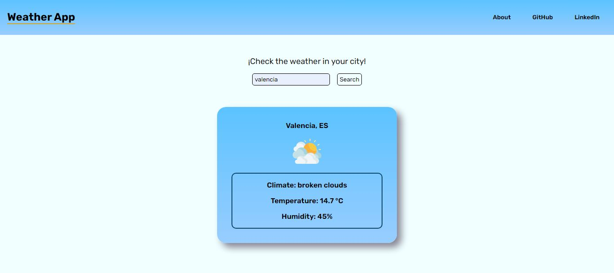
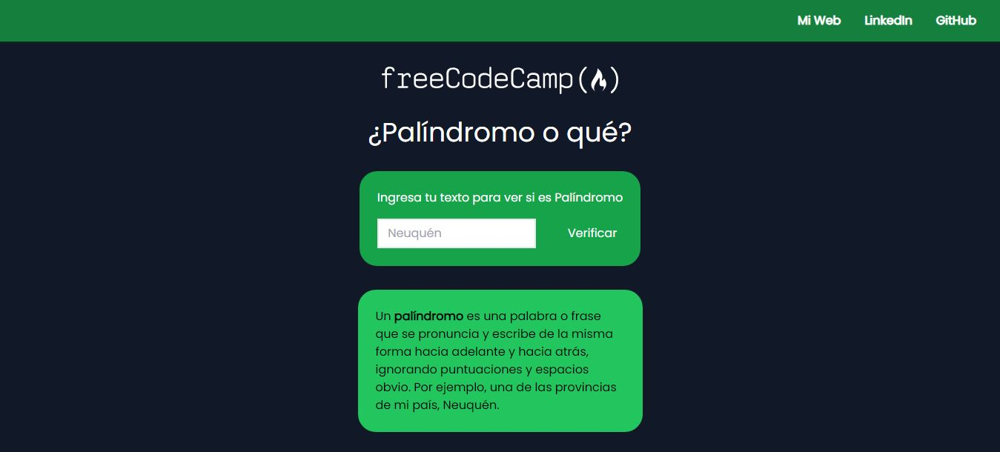

Mis Páginas Web
En esta sección podes ver mis páginas web. Me dedico plenamente al Front-End, podes revisar que tecnologías utilice en la sección de tecnologías.
Tienda Web con Tailwind y Javascript
Proyecto personal, desarrollado con TailwindCSS y Javascript. Puse en práctica la creación de una API manualmente, que simula los datos de una base de datos en formato json, e hice su diseño adaptable tanto a web como mobile (responsivo). Pasate a echar un vistazo.

Landing Page con Tailwind y Javascript
Proyecto Freelance, desarrollado con TailwindCSS y Javascript. Un cliente de mi ciudad me encargó rehacer su landing page para su empresa de construcción, asi que decidí mantenerla simple y atractiva, respetando leyes básicas del UI, y manteniendo un buen SEO a través de buenas prácticas como HTML semántico y aplicar conceptos como "lazy loading" para imágenes. Podes ver el resultado final acá.

WeatherApp con JavaScript
Simple aplicación que desarollé con la finalidad de practicar el consumo de API RESTful y el manejo de errores en solicitudes asíncronas como las realizadas por la API fetch de JavaScript. Podes revisar el clima de tu ciudad acá.

To Do App con Javascript
A medida que fui aprendiendo Javascript y sus eventos, decidi poner en práctica lo aprendido con una simple app donde podes agregar y eliminar tareas. No es muy compleja en cuanto a la lógica pero me sirvió mucho para jugar con el DOM y los eventos en JS. Podes revisarla acá y anotar esas cosas que venis pateando hace rato para cumplirlas de una vez por todas!

Palindrome Checker con Javascript
Para hacer el trabajo final de la primer sección de FreeCodeCamp hice una página que chequea por si un string es palíndromo o no. De paso me di el lujo de hacer la página en Tailwind CSS y quedé satisfecho con su simplicidad.
